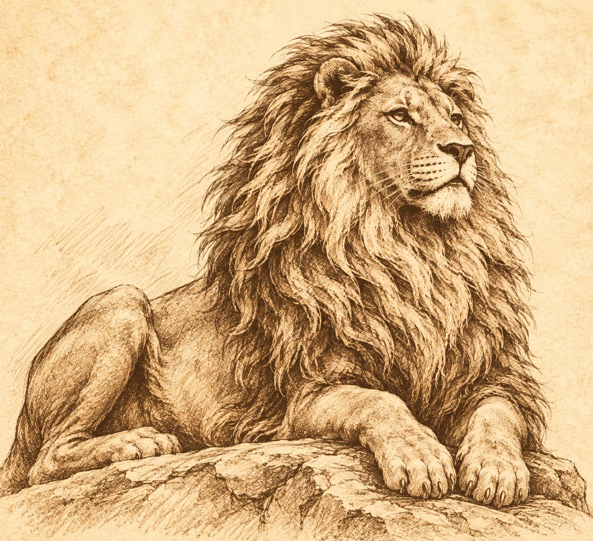

A JOURNAL FOR THE CURIOUS CHRISTIAN
Faith with
courage.
Stories with soul.
Honest stories, thoughtful faith, and culture worth talking about. A place to see the world clearly and meet it with hope.
VISIT THE JOURNAL →✳INDEPENDENTLY MADE
FOR A FAITHFUL LIFE
FOR A FAITHFUL LIFE

FAITH IN THE EVERYDAY✳STORIES THAT STAY WITH YOU✳ART, CULTURE & CONVICTION✳FAITH IN THE EVERYDAY
FROM THE JOURNAL
One story at a time.
✳
The True Vine
A journey to help a brother in need becomes an unexpected conversation about faith, service, and God’s timing.
READ THE TESTIMONY ↗EXPLORE THE JOURNAL
Good things are growing.
More stories will find
their way here soon.